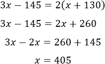
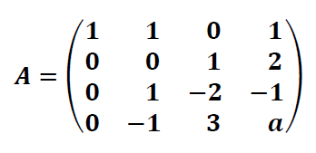

Resuelve sistemas, matrices 4x4 y visualiza vectores 3D con precisión y rapidez sin precedentes.
Versión 1.0.9 Sin instalación de Julia requerida
Olvida los errores de cálculo. Nuestro motor en Julia te da la solución inmediata para sistemas de hasta tres variables, mostrando el proceso paso a paso
Calcula determinantes, inversas y realiza multiplicaciones complejas en matrices de hasta 4 x 4. La precisión numérica que exigee la ingeniería
No solo calcules, "comprende". Visualiza la suma, el producto vectorial y las proyecciones en un entorno 3D interactivo
Tu ventaja competitiva comienza con la herramienta correcta. ¡Pruébala hoy!
DESCARGAR APLICACIÓNDesarrollado en Julia para un rendimiento excepcional